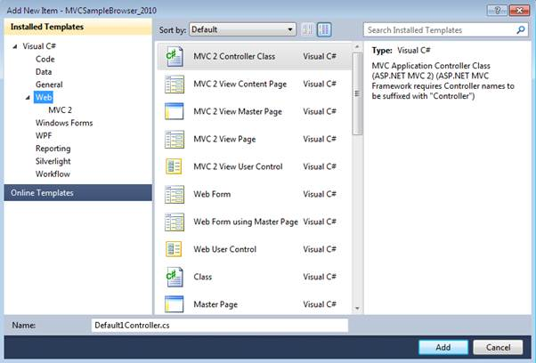
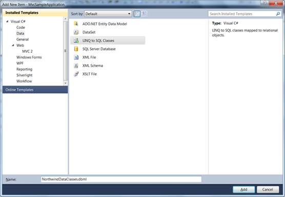
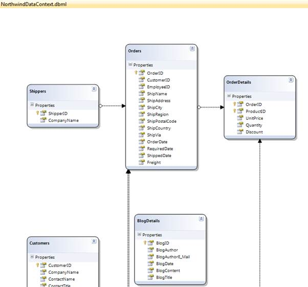

After an MVC application is created, a model has to be added. A Model is a place from where the data can be fetched by the controller (Refer to “Understanding ASP.NET MVC”). This section guides you with the step-by-step procedure on adding a model.
1. On the Solution Explorer, right-click the Models folder.
 Note: A context menu will be
displayed.
Note: A context menu will be
displayed.

Figure 14: Context Menu displayed on clicking the Models Folder
2. On the Context menu, point to Add and click New Item.
Note:The Add New Item {Application Name} is
displayed. The Categories window displays the components available under Visual
C# program. The Templates window displays the templates under the selected
elements.

Figure 15: Add New Item Dialog Box
3. Click Data under Visual C#.
Note: - The Visual Studio installed templates are
displayed in the Templates window.

Figure 16: Connecting a Database to the Application
Note: - This step is optional and should be
performed only when you want to attach a database with the model. For details,
see http://weblogs.asp.net/scottgu/archive/2007/05/29/linq-to-sql-part-2-defining-our-data-model-classes.aspx.
4. In the Name field, enter NorthwindDataClasses.
5. Click Linq to SQL Classes under Templates.
6. Finally click Add.
Note :The data classes are added
under the Model folder.
7. In the Namebox, enter NorthwindDataClasses.dbml and click the Add button.Now northwind linq to sql classes are created in your application and the Object Relational Designer appears.
8. Drag and drop the tables from the server explorer window onto the Object Relational Designer to create LINQ to SQL Classes that represent particular database tables. We need to add the all northwind database tables onto the Object Relational Designer.
When completed, you should have the following:

Figure 17: NorthwindDataContext.dbml